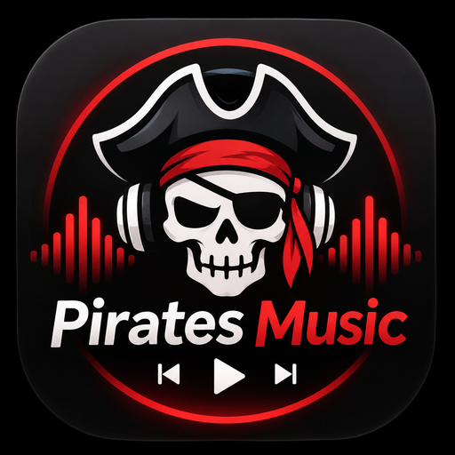

Pirates Music
Musikplayer für Android · Version 1.0

Pirates Apps · Michael Singer
Hier findest du die Datenschutzhinweise zu Apps der Pirates-Familie von Michael Singer. Wähle die App, die du verwendest. Die jeweilige Erklärung nennt ihre Daten, Berechtigungen und gegebenenfalls eingeschalteten Online-Dienste.
Musikplayer für Android · Version 1.0
Weitere Apps können auf dieser gemeinsamen Website eigene Erklärungen erhalten. Die Music-Erklärung ist keine pauschale Erklärung für Apps mit anderen Funktionen.
Find privacy information for apps in Michael Singer’s Pirates family. Select the app you use. Each policy explains that app’s data, permissions and optional online services.
Pirates Music privacy policy · Android · Version 1.0
Other apps can have their own policies on this shared website. The Music policy does not automatically apply to apps with different features.